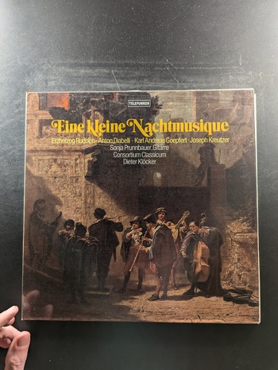
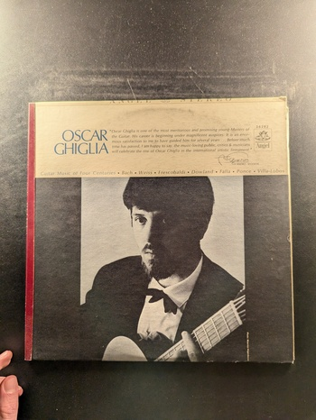

Vivaldi: The Four Seasons
Amsterdam Guitar Trio
Red Seal Digital
Guitar Music by: Leo Brouwer, Ferdinando Carulli, Michel Conge, August Kühnel, Thomas Robinson, Fernando Sor
Narciso Yepes
Deutsche Grammophon 2531 113
Eine kleine Nachtmusique
Consortium Classicum
Telefunken
Guitar Quintets Nos. 4, 5, & 6
Boccherini, Pepe Romero, Academy of St. Martin-in-the-Fields' Chamber Ensemble
Philips

Michael Newman
Michael Newman
Sheffield Lab

Music for Flute and Guitar: An 18th-Century Serenade
Jean-Pierre Rampal, René Bartoli
Odyssey
Suite Española / Spanish Dances
Manuel Barrueco
Turnabout
In a Scarlatti Guitar Recital
Barbosa-Lima
ABC Records ABC/ATS 20005
Guitar Music of Four Centuries
Oscar Ghiglia
Angel 36282
Contemporary Music for Guitar
Ernesto Bitetti
Westminster Gold WGS-8180
12 Etüden · 5 Präludien
Heitor Villa-Lobos
Deutsche Grammophon 2530 140
Música Española
Narciso Yepes
Deutsche Grammophon 2530 159
Gitarren-Duos · Guitar Duos
Georg Philipp Telemann
Deutsche Grammophon 2531 350
Guitar Music of Barrios
Guy Lukowski
EMI Angel S-37841
Werke für Gitarre: Works for Guitar
Narciso Yepes
Deutsche Grammophon 2530 096
Guitar Sonatas/Gitarrensonaten op. 22 & 25
Pepe Romero
Philips
Werke für Laute I - Works for Lute I
Johann Sebastian Bach
Deutsche Grammophon 2530 461
Partita BWV 1004 & Suite BWV 1009
Pepe Romero
Philips 6514 163
Twelve Etudes for Guitar
Heitor Villa-Lobos
The Musical Heritage Society Inc. MHS 1056
Sonatas by Scarlatti, Cimarosa, Paganini, Giuliani
Manuel Barrueco
Not specified Not specified

Classic Recordings for Guitar
Lawrence Johnson
CRG Records CRG-1
Spanish Guitar Recital
Laurindo Almeida
Everest 3287
Baroque Guitar Concerti
Konrad Ragossnig
Turnabout QVX 34647
Segovia and the Guitar
Segovia
Decca DL 79931
Segovia
Segovia
Decca Gold Label Records DL 710112
{kind=link}
{kind=link}
{kind=link}
{kind=link}


{kind=link}
{kind=link}
{kind=link}
{kind=link}
{kind=link}
{kind=link}
{kind=link}
{kind=link}
{kind=link}
{kind=link}
{kind=link}
{kind=link}
{kind=link}
{kind=link}

{kind=link}
{kind=link}
{kind=link}
{kind=link}